Pixel-level pass over the Screenplay app (apps/app), ranked by how often and how visibly each one shows. Every finding has real before and after captures at 2x from the screenshot harness, except the Knobs dot, which no fixture shows. Nothing here is ticketed yet: pick what to file.
main @ 2e4ec6f71 screens × light, dark47 screens DOM-probed9 findings
Inline rename fields turn into a white box in dark mode
Double-clicking a title to rename it (canvas title, sidebar Groups, frames and Documents, frame and Group labels on the plane) swaps in a field hardcoded to bg-white text-black with a black ring. In dark mode that is a bright white slab in a black top bar.
Where
Six copies of the same edit class: canvas-top-bar.tsx:156, room-sidebar.tsx:760, iframe-layer-row.tsx:93, markdown-layer-row.tsx:48, layer-title-bar.tsx:233, group-label.tsx:281.
Fix
bg-background text-foreground ring-foreground/15 (and drop the zeroed shadow-sm). Light mode is unchanged.
Before · lightAfter · light
Before · darkAfter · dark
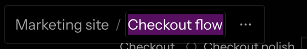
2
Chat task lists use the browser's grey checkbox
GFM task items (- [x]) render as Chrome's native disabled checkbox: pale grey, rounded, OS-styled, and nothing like the app's Checkbox. Checked items read as disabled rather than done.
Where
chat-markdown.tsx has no input override, so react-markdown emits <input type=checkbox disabled>.
Fix
Map input[type=checkbox] to the stock Checkbox, disabled but at full ink (disabled:opacity-100).
Before · lightAfter · light
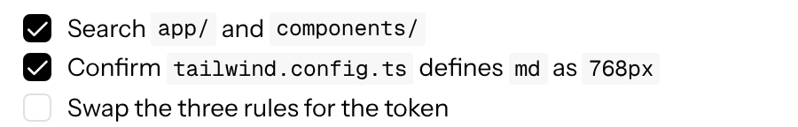
Before · dark
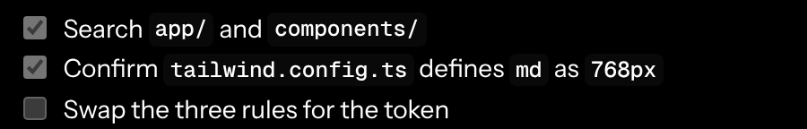
After · dark
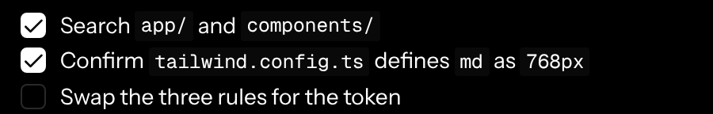
3
Chat code chips are medium weight with 4px corners; code blocks 6px
#1048 set inline code to regular weight so it sits level with body text. The Document editor got that, but chat still sets font-weight: 500, so every code chip in a reply looks bold. Chips also use a 4px radius and fenced blocks 6px, while every other surface is on the 2px radius.
Chat chip font-weight: 400; chips and code blocks border-radius: var(--radius).
Before · light
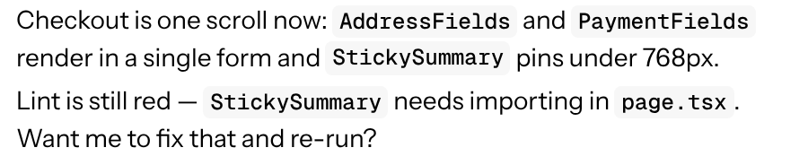
After · light
Before · lightAfter · light
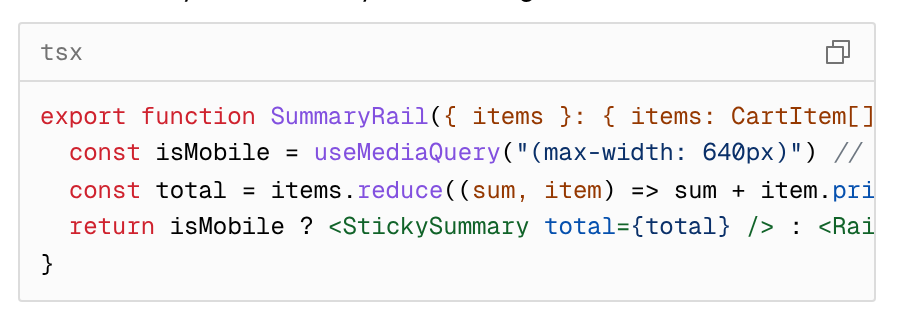
Before · darkAfter · dark
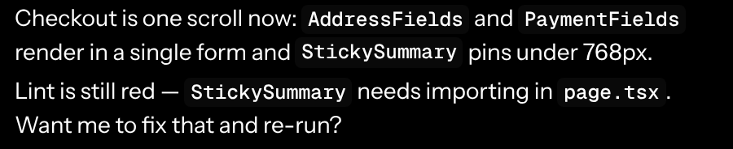
Before · darkAfter · dark
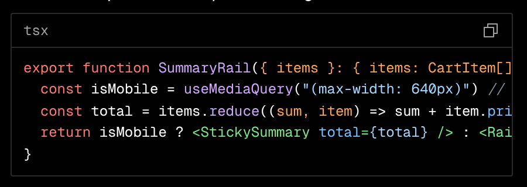
4
Two breadcrumbs, two type recipes
The canvas pill breadcrumb is 12px medium; the chat header breadcrumb right beside it is 14px regular (probe: 12px/500 vs 14px/400). Sidebar rows, tab labels and the Coordinator title are all 14px, so the canvas pill is the odd one out and reads smaller than everything around it.
text-sm, regular weight, py-0.5. The pill keeps its height (measured 36px before and after); only its width grows.
Before · lightAfter · light
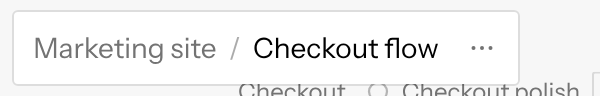
Before · lightAfter · light
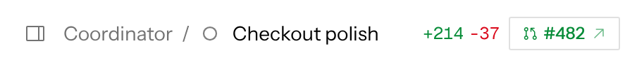
Before · dark
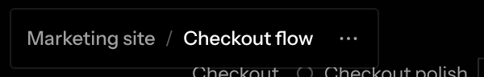
After · dark
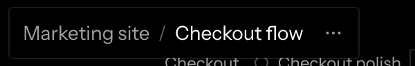
Before · dark
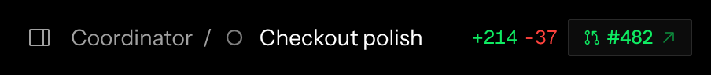
After · dark
5
Plan card buttons are the only 28px buttons with 12px labels
Approve and Request changes override the stock small button with h-7 text-xs. Every other 28px button in the app (Coordinator Remove/Cancel, starter chips, Add repository, Edit) is 14px, so the plan's actions look shrunken next to the 14px reply text.
Where
agent-message.tsx:867, 876 (className="h-7 text-xs"). Probe across 47 screens: these 2 are the only sm buttons at 12px.
Fix
Drop the override; size="sm" is already 28px.
Before · light
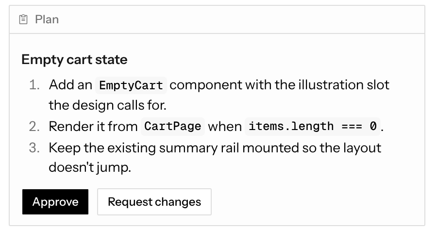
After · light
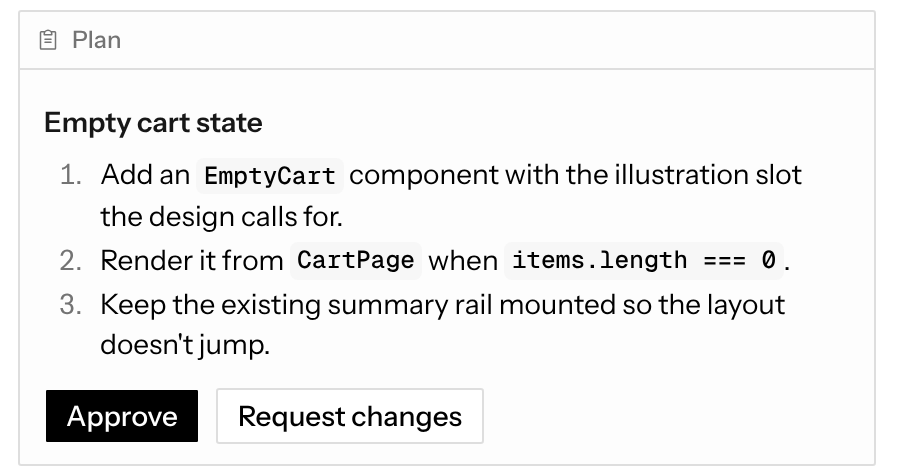
Before · dark
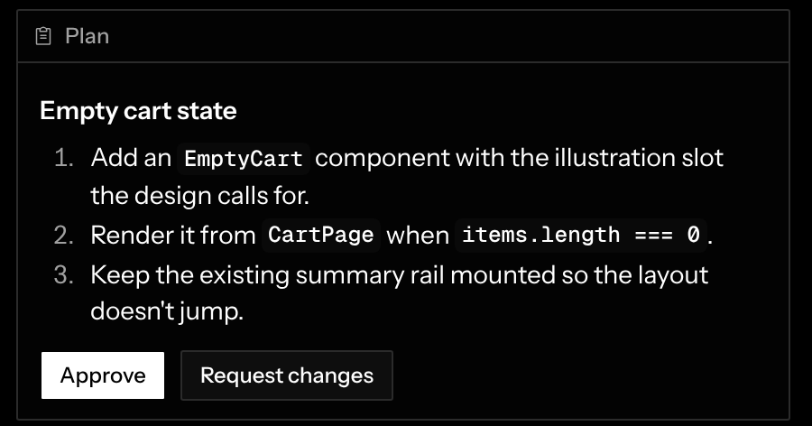
After · dark
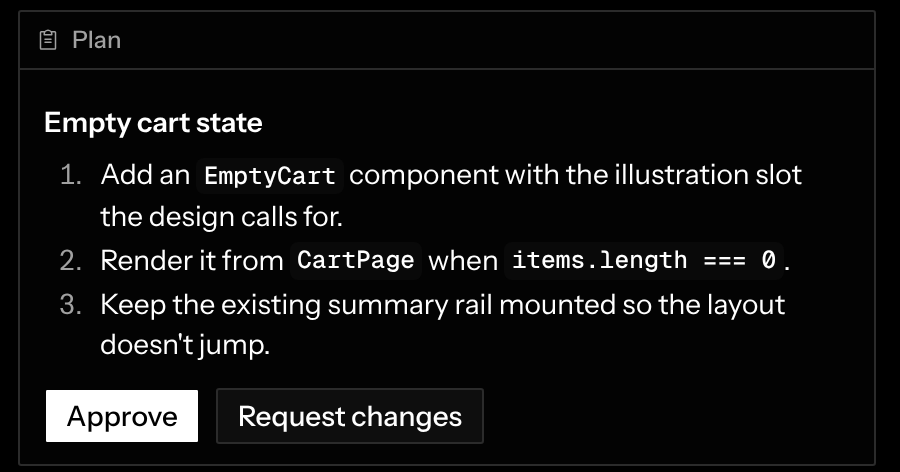
6
Setup's current step wears a 3px halo
The expanded setup step adds ring-3 ring-foreground/5 outside its border: a soft grey halo with a rounder outer corner than the square card inside it. It is the only haloed card in the app, and the kind of heavy ring Zack turned down in #720.
Where
setup-step.tsx:45 (also a zeroed shadow-xs).
Fix
Keep the border-foreground/20 card; drop the ring and shadow. The open body and the numbered marker already mark it as current.
Before · lightAfter · light
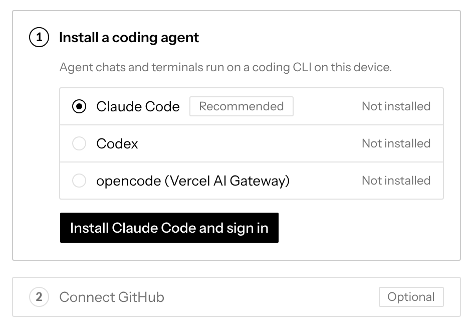
Before · dark
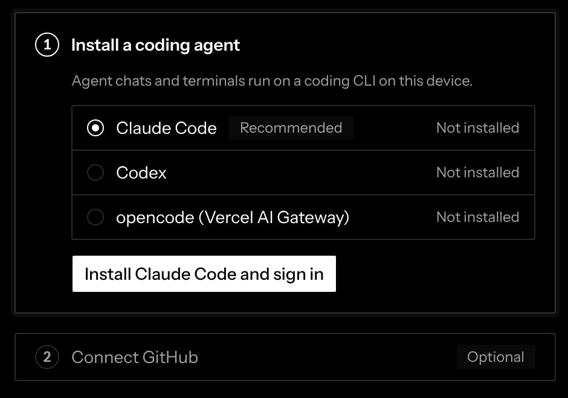
After · dark
7
Setup chips are the only filled chips
“Recommended” and “Optional” are secondary badges on a grey fill. Every other chip (Private on presets, Not installed and Signed in on Coding agents, the lint-failed chip in chat) is an outline badge, per the ink/outline/fill rule. Visible in the same crop as the finding above.
Where
setup-step.tsx:19 (SetupChip).
Fix
variant="outline", keeping the muted label.
8
Dark frame and player surfaces are blue-tinted zinc
Frame bodies, frame status cards and the full-screen player use Tailwind's dark:bg-zinc-900, measured at rgb(24,24,27): a cool blue cast in an otherwise pure-neutral palette (page 0, plane 9, muted 26, all R=G=B). Subtle side by side, obvious on the full-screen player.
Where
iframe-layer.tsx:1103, 1115; frame-status.tsx:94; prototype-player.tsx:449, 490. These are the only raw palette greys left in the app.
Fix
dark:bg-neutral-900 (rgb 23,23,23).
Before · dark
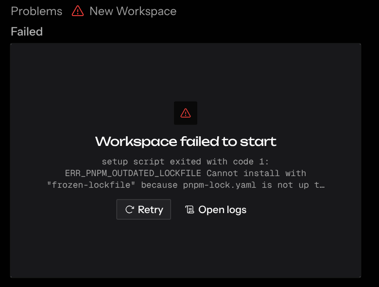
After · dark
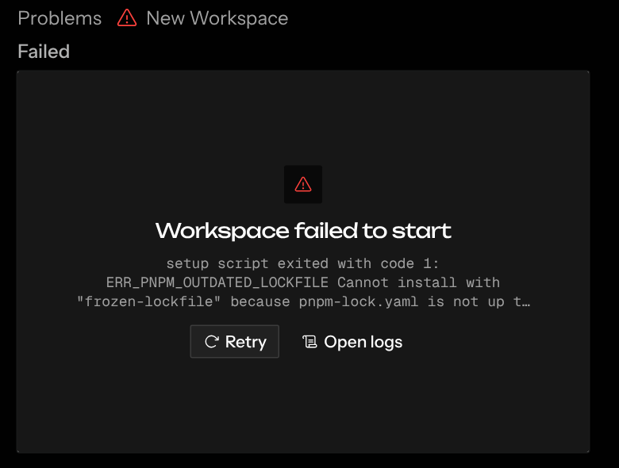
Before · dark
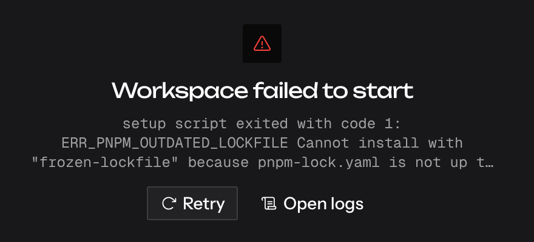
After · dark
9
Knobs dot is raw Tailwind orange
The dot on the Knobs button that says a frame has knob overrides is bg-orange-500. It is the only raw hue in the app and is not a Signal colour; every other indicator dot (unread tab, Workspaces menu, comments) is bg-info-fill.
Where
knobs-popover.tsx:51. No fixture has knob overrides, so this one is a mockup.
Fix
bg-info-fill, same as the other dots.
Before
New chat
After (mockup)
New chat
Also noticed, not prototyped
Tool-call rows show the path in mono when the agent sends a structured call (Edit app/checkout/summary.tsx) but in sans when the adapter sends a plain title (the queued-message screen). Same row, two looks, depending on the agent.
The zoom trigger's 42% is 12px regular while its neighbours (breadcrumb, Workspaces, model picker) are 12px medium. Left alone because the zoom pill is already in #1161.
The stock Checkbox keeps shadcn's 4px corner (rounded-[4px]) against the 2px radius everywhere else; it shows in the Delete Workspace dialog and, with finding 2, in chat.
Checked and fine: icon buttons (every IconButton measured 28×28 with a 16px icon), type (only 12px, 14px and the title sizes appear), dialog padding (20px on Create workspaces, Move and Keyboard shortcuts), status chips (outline, no tints). Skipped anything already ticketed in round 5 (#1160–#1170), the mention list and canvas menu offset, and Workspace pills.
Prototype diff for all nine fixes: design-audit-app-nits/prototype.patch in project files (applies to main @ 2e4ec6f).